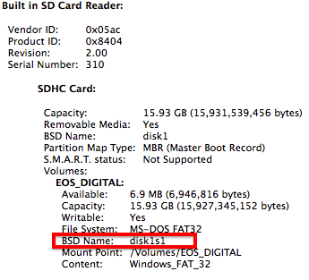
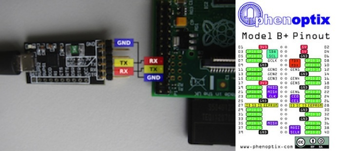

I originally wrote this post as a companion to my Make your own Smart AC post for those who might want a bit more guidance setting up their Raspberry Pi. Everything in the post, however, is generally applicable, so if you’re embarking on some other project, that’s awesome too, and I hope my post can help.
Follow this adafruit tutorial<–
The following are some tips that I would have found helpful to know while I was trying to set up my Raspberry Pi. If you already know what you’re doing on that front, skip to the next section.
- Download an OS image onto your SD card. (I used Raspbian.)
Step 7 of the tutorial is a bit scary: “Enter the number next to the SD card drive. Make sure you get this right, because whichever drive you select will be erased.”
Don’t freak out. It is pretty likely that your SD card is /dev/disk1s1 like it says in the tutorial, but here is how to check (on a Mac).
- Hit the apple in the top left corner
- About this mac
- Click system report
- If you are using the builtin SD card reader, click on Card Reader under hardware. If you’re using a USB reader, click USB.
- You should see the information about your SD card.
- Look for “BSD Name”

- Put the SD card into your raspberry pi’s SD card slot (for the B+ this is on the underside)
- Either connect your computer to a keyboard and monitor as the tutorial suggests, or if you have a serial cable, connect the TX and RX of the cable to the RX and TX of the Pi. Checkout the pinout map below on the right to see where the RX and TX pins are located:  Probably don’t do this unless you’ve already done it before, you need to be able to pull up a terminal/terminal emulation of the usb connected serial cable
- Make sure to plug the Pi in using your micro usb power cable (into your computer’s USB port is fine), and connect it to the network with an ethernet cable.
- Once you have brought the Pi up on a monitor or on your screen using the serial port method, you can run
ifconfigand find your IP address, and you can do the rest of this by ssh-ing into the Pi from your computer, if you want.ssh username@ip.add.ress - Do the first time configuration
{kind=link}
Configure wifi
Start by trying this Adafruit tutorial.
Following this tutorial worked perfectly when I configured my Pi’s wifi at Hacker School, but when I brought it home, and tried to do it again on my home network, no dice. My home router used a different type of security, and yours might too. After a lot of googling and trial and error, I found something that worked for me.
- I started here
- Then I looked here–post 2, and here
- Finally, I still had a DNS issue. To fix add the google nameservers to a file called resolv.conf:
Sudo nano /etc/resolv.conf(Nano is a text editor in linux.) Add the follwing lines:
On your own computer, run nmap on your local computer to see if the Raspberry Pi is showing up on the network without ethernet (and get its new IP address). If the ip address of your computer is 192.168.1.3, for example, take the first three bits of the address and then add .0/24 to map the 256 hosts between 192.168.10.0 and .255. nmap -sP 192.168.1.0/24
You should now be able to ssh into your Pi over wifi!
Protip, if you hate using nano, and you want to use your local sublime to edit files on the Pi, download the rsub package on package control, and follow these steps.